Andrews Transformation: From Tables to Curves
Source:vignettes/articles/andrews-transformation.Rmd
andrews-transformation.RmdIntroduction
Many potential fdars users have multivariate (tabular) data rather than functional data. The Andrews transformation (Andrews, 1972) provides a mathematically rigorous bridge: it maps each -dimensional observation to a curve on using a Fourier expansion where the data values serve as coefficients.
The key property is that the distance between Andrews curves equals times the Euclidean distance between the original observations — so all distance-based FDA methods produce results that are directly interpretable in the original multivariate space.
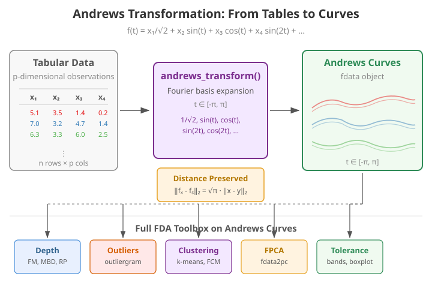
This article demonstrates the full fdars pipeline — depth, outlier detection, clustering, and FPCA — applied to Andrews-transformed iris data.
Mathematical Background
Given a -dimensional observation , the Andrews function is defined as:
for . The pattern is: the first coefficient is scaled by , then subsequent coefficients multiply alternating and terms.
Distance preservation theorem. For any two observations and :
This means Euclidean distances are preserved (up to a constant factor) when moving to the functional domain. Every distance-based FDA method — depth, clustering, outlier detection — produces results equivalent to applying the same method with Euclidean distance in the original space.
Variable ordering. Because the first Fourier terms carry the most visual weight, ordering variables by importance (e.g., by ANOVA F-statistic or variance) makes the plots more informative. However, the distance preservation property holds regardless of ordering, so analytical results are invariant.
The andrews_transform() Function
The package provides andrews_transform(), which builds
the Fourier basis matrix and returns an fdata object. The
basis matrix and variable names are stored as attributes so that
andrews_loadings() can later project FPCA eigenfunctions
back to the original variable space.
Iris Dataset and Visualization
The iris dataset has 150 observations with 4 numeric variables. We standardize before transforming so that no single variable dominates due to scale:
X_raw <- as.matrix(iris[, 1:4])
X <- scale(X_raw)
species <- iris$Species
fd_iris <- andrews_transform(X)
cat("Andrews curves:", nrow(fd_iris$data), "observations,",
ncol(fd_iris$data), "grid points\n")
#> Andrews curves: 150 observations, 200 grid points
# Plot Andrews curves colored by species
n <- nrow(fd_iris$data)
m <- ncol(fd_iris$data)
t_grid <- fd_iris$argvals
df_curves <- data.frame(
t = rep(t_grid, n),
value = as.vector(t(fd_iris$data)),
curve = rep(1:n, each = m),
species = rep(species, each = m)
)
ggplot(df_curves, aes(x = t, y = value, group = curve, color = species)) +
geom_line(alpha = 0.4, linewidth = 0.4) +
scale_color_manual(values = c("setosa" = "#E41A1C", "versicolor" = "#377EB8",
"virginica" = "#4DAF4A")) +
labs(title = "Andrews Curves of Iris Data",
x = expression(t), y = expression(f[x](t)), color = "Species") +
theme_minimal() +
theme(legend.position = "bottom")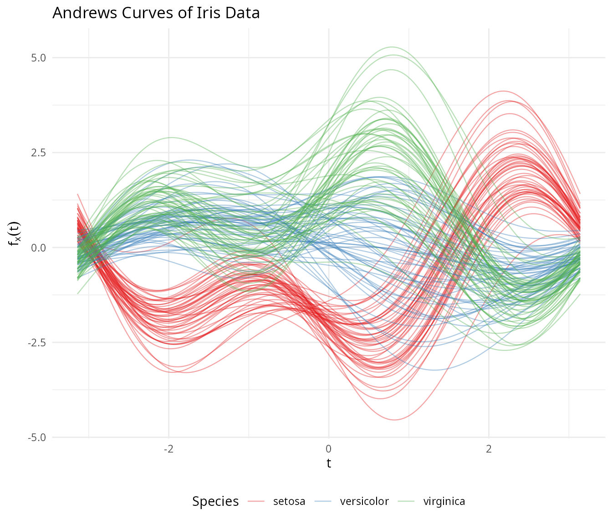
Setosa separates clearly, while versicolor and virginica overlap — exactly matching what we know about these species in the original space.
Group Means
# Compute mean curve per species
species_levels <- levels(species)
df_means <- do.call(rbind, lapply(species_levels, function(sp) {
idx <- which(species == sp)
mean_curve <- colMeans(fd_iris$data[idx, ])
data.frame(t = t_grid, value = mean_curve, species = sp)
}))
ggplot(df_means, aes(x = t, y = value, color = species)) +
geom_line(linewidth = 1.2) +
scale_color_manual(values = c("setosa" = "#E41A1C", "versicolor" = "#377EB8",
"virginica" = "#4DAF4A")) +
labs(title = "Mean Andrews Curves by Species",
x = expression(t), y = expression(bar(f)(t)), color = "Species") +
theme_minimal() +
theme(legend.position = "bottom")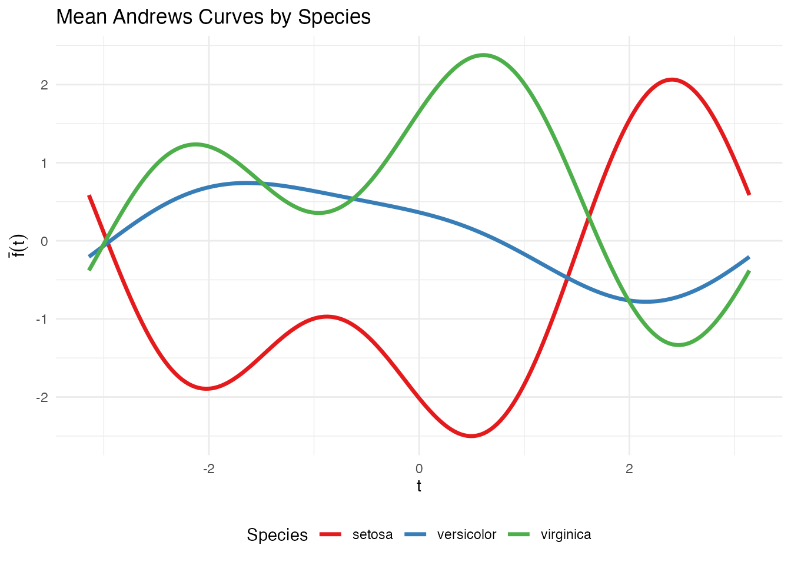
Depth and Centrality
Functional depth measures how “central” each curve is relative to the sample. Deeper curves are more typical; shallow curves are potential outliers.
# Fraiman-Muniz depth
depth_fm <- depth.FM(fd_iris)
# Modified Band Depth
depth_mbd <- depth.MBD(fd_iris)
df_depth <- data.frame(
FM = depth_fm,
MBD = depth_mbd,
species = species
)
# Boxplot of depth by species
df_depth_long <- data.frame(
depth = c(depth_fm, depth_mbd),
method = rep(c("Fraiman-Muniz", "Modified Band Depth"), each = length(species)),
species = rep(species, 2)
)
ggplot(df_depth_long, aes(x = species, y = depth, fill = species)) +
geom_boxplot(alpha = 0.7) +
facet_wrap(~ method, scales = "free_y") +
scale_fill_manual(values = c("setosa" = "#E41A1C", "versicolor" = "#377EB8",
"virginica" = "#4DAF4A")) +
labs(title = "Functional Depth by Species",
x = NULL, y = "Depth") +
theme(legend.position = "none")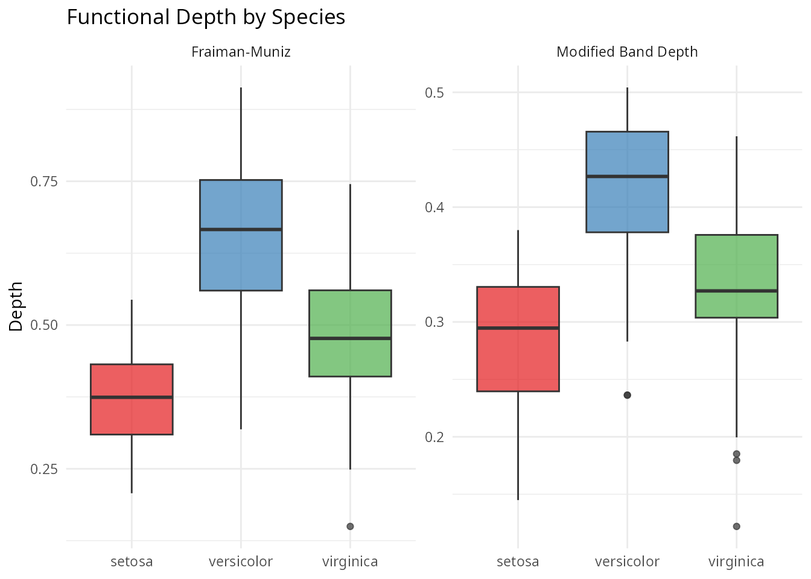
Functional Median and Trimmed Mean
# Functional median (deepest curve)
fd_median <- median(fd_iris)
# Trimmed mean (mean of deepest 50%)
fd_trimmed <- trimmed(fd_iris, trim = 0.5)
df_central <- data.frame(
t = rep(t_grid, 2),
value = c(fd_median$data[1, ], fd_trimmed$data[1, ]),
type = rep(c("Median", "Trimmed Mean (50%)"), each = m)
)
ggplot(df_central, aes(x = t, y = value, color = type)) +
geom_line(linewidth = 1.2) +
scale_color_manual(values = c("Median" = "darkblue", "Trimmed Mean (50%)" = "darkorange")) +
labs(title = "Functional Median and Trimmed Mean",
x = expression(t), y = expression(f(t)), color = NULL) +
theme(legend.position = "bottom")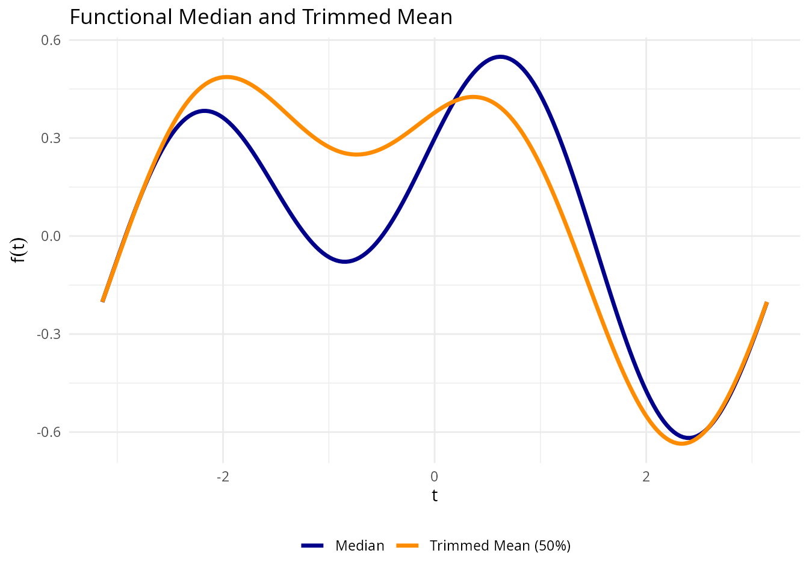
Outlier Detection
We apply three complementary outlier detection methods.
Depth-Ponderation
out_pond <- outliers.depth.pond(fd_iris, nb = 1000, seed = 123)
cat("Depth-ponderation outliers:", out_pond$outliers, "\n")
#> Depth-ponderation outliers: 16 34 42 61 110 118 119 132
cat("Species:", as.character(species[out_pond$outliers]), "\n")
#> Species: setosa setosa setosa versicolor virginica virginica virginica virginicaOutliergram
The outliergram plots Modified Epigraph Index against Modified Band Depth, flagging curves that fall outside the expected parabolic relationship:
og <- outliergram(fd_iris)
plot(og)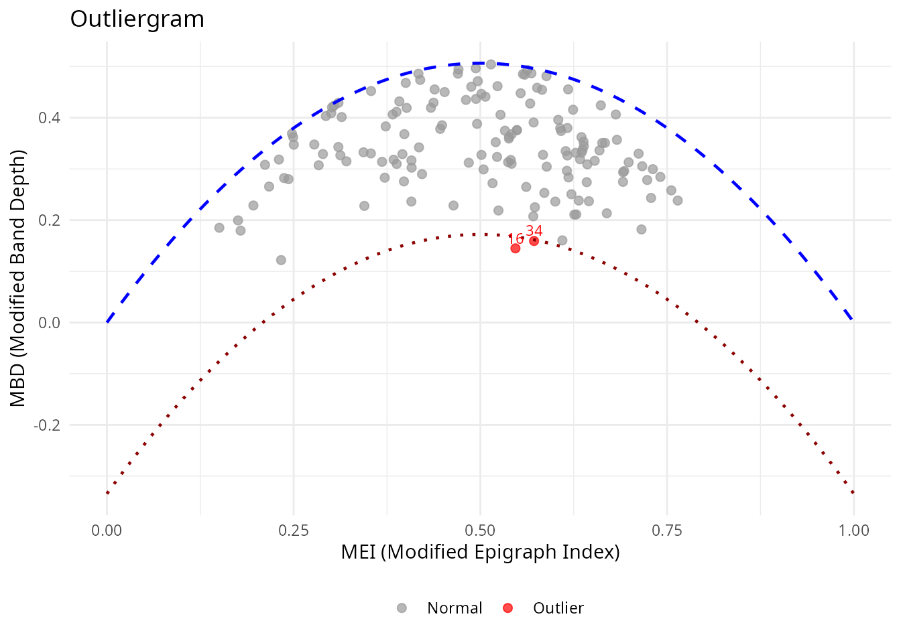
Magnitude-Shape Plot
The magnitude-shape plot separates outliers into those that differ in magnitude (shifted up/down) from those that differ in shape (different pattern):
ms <- magnitudeshape(fd_iris)
plot(ms)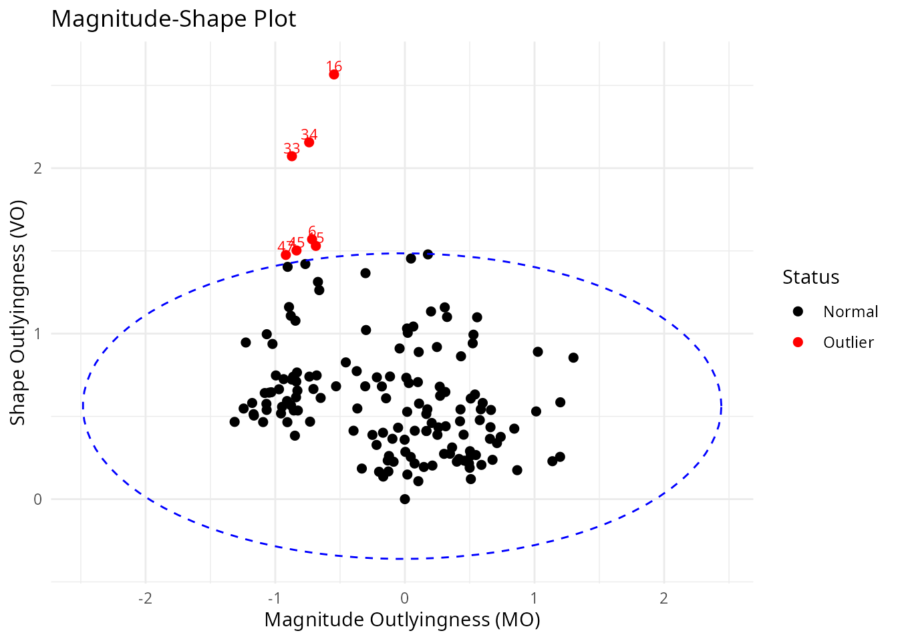
Cross-Referencing with Original Data
# Collect all flagged observations
all_outliers <- unique(c(out_pond$outliers, og$outliers, ms$outliers))
cat("All flagged observations:", sort(all_outliers), "\n")
#> All flagged observations: 6 15 16 33 34 42 45 47 61 110 118 119 132
if (length(all_outliers) > 0) {
cat("\nOriginal iris values for flagged observations:\n")
print(iris[all_outliers, ])
}
#>
#> Original iris values for flagged observations:
#> Sepal.Length Sepal.Width Petal.Length Petal.Width Species
#> 16 5.7 4.4 1.5 0.4 setosa
#> 34 5.5 4.2 1.4 0.2 setosa
#> 42 4.5 2.3 1.3 0.3 setosa
#> 61 5.0 2.0 3.5 1.0 versicolor
#> 110 7.2 3.6 6.1 2.5 virginica
#> 118 7.7 3.8 6.7 2.2 virginica
#> 119 7.7 2.6 6.9 2.3 virginica
#> 132 7.9 3.8 6.4 2.0 virginica
#> 6 5.4 3.9 1.7 0.4 setosa
#> 15 5.8 4.0 1.2 0.2 setosa
#> 33 5.2 4.1 1.5 0.1 setosa
#> 45 5.1 3.8 1.9 0.4 setosa
#> 47 5.1 3.8 1.6 0.2 setosaClustering
K-Means with k = 3
km <- cluster.kmeans(fd_iris, ncl = 3, nstart = 20, seed = 123)
# Confusion matrix
conf_matrix <- table(Predicted = km$cluster, True = species)
print(conf_matrix)
#> True
#> Predicted setosa versicolor virginica
#> 1 0 39 14
#> 2 50 0 0
#> 3 0 11 36
# Accuracy with optimal label matching
max_matches <- 0
for (perm in list(c(1,2,3), c(1,3,2), c(2,1,3), c(2,3,1), c(3,1,2), c(3,2,1))) {
matched <- sum(km$cluster == perm[as.numeric(species)])
max_matches <- max(max_matches, matched)
}
cat("Best matching accuracy:", max_matches / length(species), "\n")
#> Best matching accuracy: 0.8333333
df_km <- data.frame(
t = rep(t_grid, n),
value = as.vector(t(fd_iris$data)),
curve = rep(1:n, each = m),
cluster = factor(rep(km$cluster, each = m))
)
ggplot(df_km, aes(x = t, y = value, group = curve, color = cluster)) +
geom_line(alpha = 0.3, linewidth = 0.4) +
scale_color_brewer(palette = "Set1") +
labs(title = "K-Means Clusters (k = 3)",
x = expression(t), y = expression(f[x](t)), color = "Cluster") +
theme(legend.position = "bottom")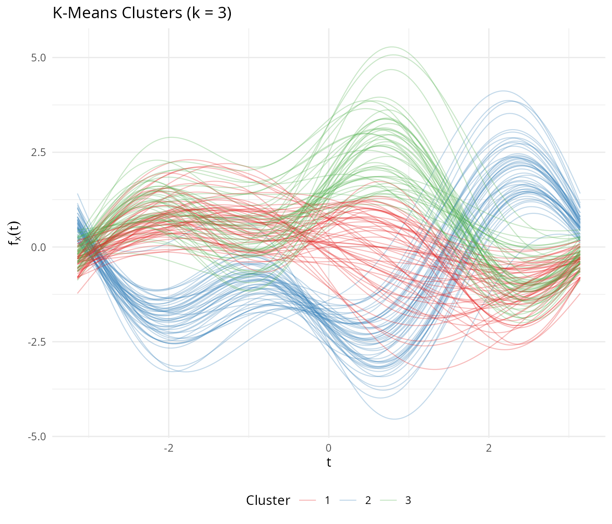
Automatic Number of Clusters
opt <- cluster.optim(fd_iris, ncl.range = 2:6, criterion = "silhouette", seed = 123)
cat("Optimal number of clusters (silhouette):", opt$best.model$ncl, "\n")
#> Optimal number of clusters (silhouette):Fuzzy C-Means
Fuzzy clustering captures the overlap between versicolor and virginica:
fcm <- cluster.fcm(fd_iris, ncl = 3, seed = 123)
# Find versicolor observations with high membership uncertainty
membership <- fcm$membership
max_membership <- apply(membership, 1, max)
df_fuzzy <- data.frame(
observation = 1:n,
max_membership = max_membership,
species = species
)
ggplot(df_fuzzy, aes(x = species, y = max_membership, fill = species)) +
geom_boxplot(alpha = 0.7) +
scale_fill_manual(values = c("setosa" = "#E41A1C", "versicolor" = "#377EB8",
"virginica" = "#4DAF4A")) +
geom_hline(yintercept = 0.5, linetype = "dashed", color = "gray40") +
labs(title = "Fuzzy C-Means: Maximum Membership by Species",
subtitle = "Lower values indicate more overlap between clusters",
x = NULL, y = "Maximum Membership Probability") +
theme(legend.position = "none")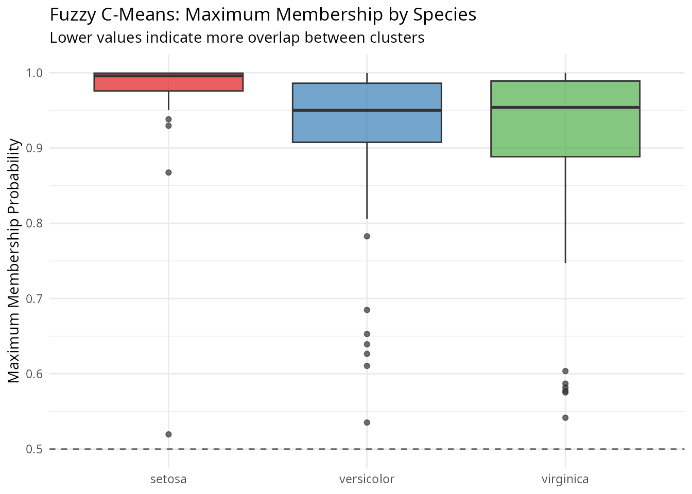
Setosa observations have near-perfect membership, while versicolor and virginica show much more uncertainty — reflecting the genuine overlap between these species.
FPCA
Functional PCA on Andrews curves reveals the dominant modes of variation:
fpca <- fdata2pc(fd_iris, ncomp = 4)
# Variance explained
var_explained <- fpca$d^2 / sum(fpca$d^2) * 100
cat("Variance explained by first 4 PCs:\n")
#> Variance explained by first 4 PCs:
for (i in 1:4) {
cat(sprintf(" PC%d: %.1f%%\n", i, var_explained[i]))
}
#> PC1: 72.9%
#> PC2: 22.8%
#> PC3: 3.7%
#> PC4: 0.5%
cat(sprintf(" Total: %.1f%%\n", sum(var_explained[1:4])))
#> Total: 100.0%Score Plot
df_scores <- data.frame(
PC1 = fpca$x[, 1],
PC2 = fpca$x[, 2],
species = species
)
ggplot(df_scores, aes(x = PC1, y = PC2, color = species)) +
geom_point(size = 2.5, alpha = 0.8) +
scale_color_manual(values = c("setosa" = "#E41A1C", "versicolor" = "#377EB8",
"virginica" = "#4DAF4A")) +
labs(title = "FPCA Score Plot (Andrews Curves)",
x = sprintf("PC1 (%.1f%%)", var_explained[1]),
y = sprintf("PC2 (%.1f%%)", var_explained[2]),
color = "Species") +
theme(legend.position = "bottom")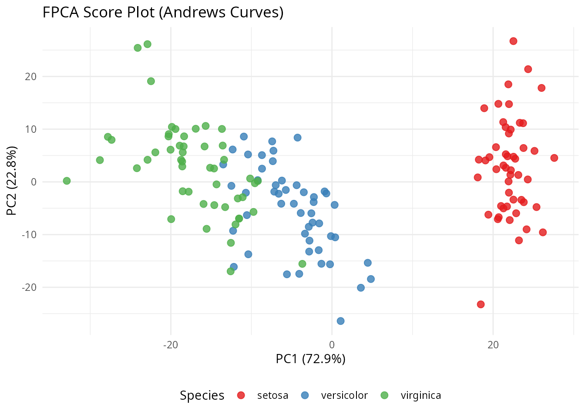
Component Functions
df_components <- data.frame(
t = rep(t_grid, 3),
loading = c(fpca$rotation$data[1, ], fpca$rotation$data[2, ],
fpca$rotation$data[3, ]),
PC = factor(rep(paste0("PC", 1:3), each = m))
)
ggplot(df_components, aes(x = t, y = loading, color = PC)) +
geom_line(linewidth = 1) +
geom_hline(yintercept = 0, linetype = "dashed", alpha = 0.5) +
scale_color_brewer(palette = "Set1") +
labs(title = "Principal Component Functions",
x = expression(t), y = "Loading", color = NULL) +
theme(legend.position = "bottom")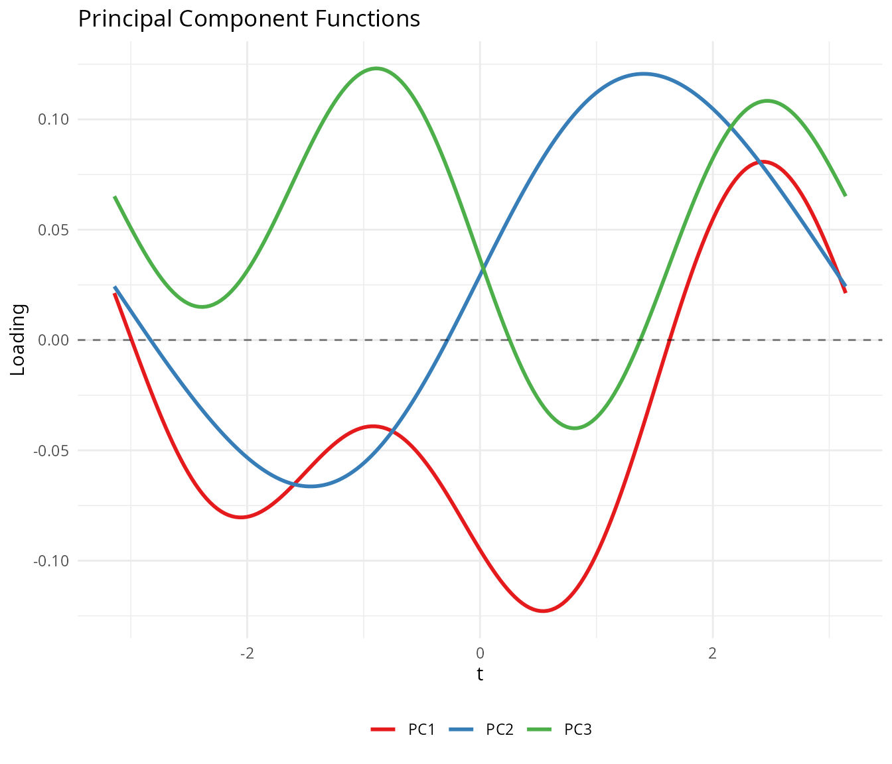
Variable Ordering
The Andrews transformation maps the first variable to the term, the second to , and so on. Because lower-frequency Fourier terms dominate visually, placing important variables first produces more informative plots.
We rank the iris variables by ANOVA F-statistic:
# Rank variables by ANOVA F-statistic
f_stats <- sapply(1:4, function(j) {
fit <- aov(X[, j] ~ species)
summary(fit)[[1]]$`F value`[1]
})
names(f_stats) <- colnames(iris)[1:4]
var_order <- order(f_stats, decreasing = TRUE)
cat("Variables ranked by ANOVA F-statistic:\n")
#> Variables ranked by ANOVA F-statistic:
for (i in var_order) {
cat(sprintf(" %s: F = %.1f\n", names(f_stats)[i], f_stats[i]))
}
#> Petal.Length: F = 1180.2
#> Petal.Width: F = 960.0
#> Sepal.Length: F = 119.3
#> Sepal.Width: F = 49.2
# Transform with original and reordered variables
fd_original <- andrews_transform(X)
fd_reordered <- andrews_transform(X[, var_order])
# Plot both
df_orig <- data.frame(
t = rep(t_grid, n),
value = as.vector(t(fd_original$data)),
curve = rep(1:n, each = m),
species = rep(species, each = m),
ordering = "Original Order"
)
df_reord <- data.frame(
t = rep(t_grid, n),
value = as.vector(t(fd_reordered$data)),
curve = rep(1:n, each = m),
species = rep(species, each = m),
ordering = "Reordered by F-statistic"
)
p1 <- ggplot(df_orig, aes(x = t, y = value, group = curve, color = species)) +
geom_line(alpha = 0.4, linewidth = 0.4) +
scale_color_manual(values = c("setosa" = "#E41A1C", "versicolor" = "#377EB8",
"virginica" = "#4DAF4A")) +
labs(title = "Original Variable Order",
x = expression(t), y = expression(f[x](t)), color = "Species") +
theme_minimal() +
theme(legend.position = "bottom")
p2 <- ggplot(df_reord, aes(x = t, y = value, group = curve, color = species)) +
geom_line(alpha = 0.4, linewidth = 0.4) +
scale_color_manual(values = c("setosa" = "#E41A1C", "versicolor" = "#377EB8",
"virginica" = "#4DAF4A")) +
labs(title = "Reordered by ANOVA F-statistic",
x = expression(t), y = expression(f[x](t)), color = "Species") +
theme_minimal() +
theme(legend.position = "bottom")
if (requireNamespace("patchwork", quietly = TRUE)) {
library(patchwork)
p1 / p2
} else {
print(p1)
print(p2)
}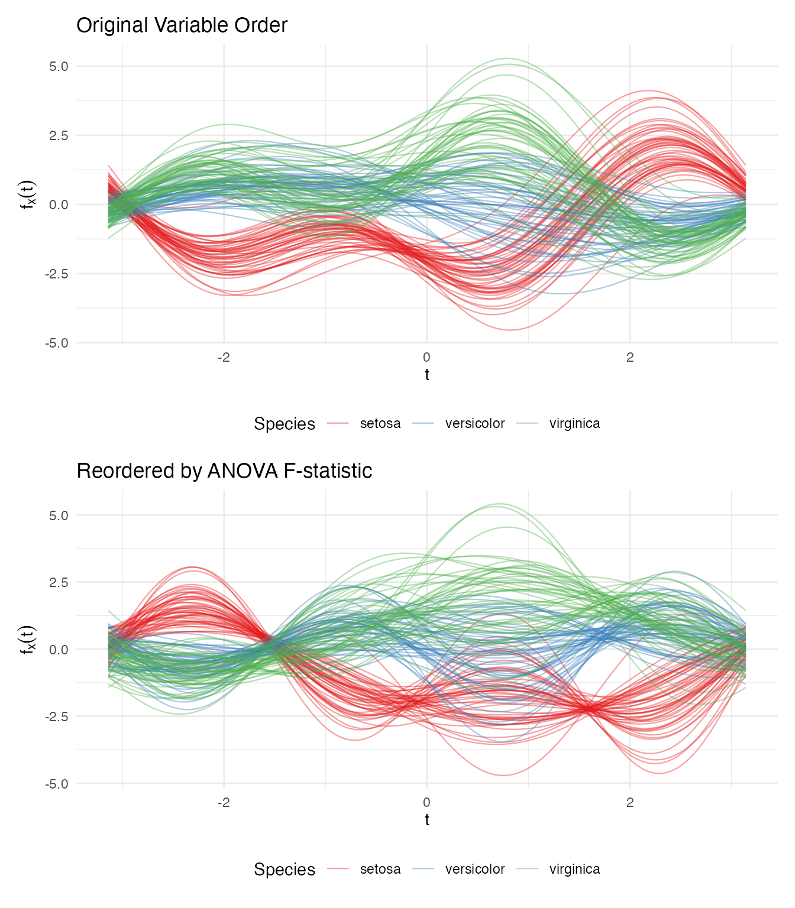
The reordered plot shows clearer species separation because the most discriminating variable (petal length) now drives the dominant low-frequency component.
Clustering is Invariant to Ordering
The distance preservation theorem guarantees that analytical results are identical regardless of variable ordering:
km_original <- cluster.kmeans(fd_original, ncl = 3, nstart = 20, seed = 123)
km_reordered <- cluster.kmeans(fd_reordered, ncl = 3, nstart = 20, seed = 123)
# Match cluster labels and compare
best_match <- function(c1, c2) {
max_matches <- 0
for (perm in list(c(1,2,3), c(1,3,2), c(2,1,3), c(2,3,1), c(3,1,2), c(3,2,1))) {
relabeled <- perm[c2]
max_matches <- max(max_matches, sum(c1 == relabeled))
}
max_matches
}
agreement <- best_match(km_original$cluster, km_reordered$cluster)
cat("Cluster agreement:", agreement, "/", n, "(", round(100 * agreement / n, 1), "%)\n")
#> Cluster agreement: 150 / 150 ( 100 %)Distance Verification
We verify the theoretical result: .
# Compute pairwise Andrews (L2) distances
dist_andrews <- metric.lp(fd_iris)
# Compute pairwise Euclidean distances on standardized data
dist_euclid <- as.matrix(dist(X))
# Extract upper triangle
idx_upper <- upper.tri(dist_andrews)
d_a <- dist_andrews[idx_upper]
d_e <- dist_euclid[idx_upper]
# Exclude pairs with zero Euclidean distance (iris has 1 duplicate observation)
nonzero <- d_e > 1e-10
ratio <- d_a[nonzero] / d_e[nonzero]
cat("Distance ratio d_andrews / d_euclidean:\n")
#> Distance ratio d_andrews / d_euclidean:
cat(sprintf(" Mean: %.4f\n", mean(ratio)))
#> Mean: 1.7725
cat(sprintf(" Median: %.4f\n", median(ratio)))
#> Median: 1.7725
cat(sprintf(" SD: %.2e\n", sd(ratio)))
#> SD: 3.91e-16
cat(sprintf(" sqrt(pi) = %.4f\n", sqrt(pi)))
#> sqrt(pi) = 1.7725
df_dist <- data.frame(
euclidean = d_e[nonzero],
andrews = d_a[nonzero]
)
ggplot(df_dist, aes(x = euclidean, y = andrews)) +
geom_point(alpha = 0.1, size = 0.5) +
geom_abline(slope = sqrt(pi), intercept = 0, color = "red", linewidth = 1) +
labs(title = "Andrews L2 Distance vs Euclidean Distance",
subtitle = sprintf("Red line: slope = sqrt(pi) ≈ %.4f", sqrt(pi)),
x = "Euclidean Distance (standardized data)",
y = "Andrews L2 Distance") +
theme_minimal() +
coord_equal()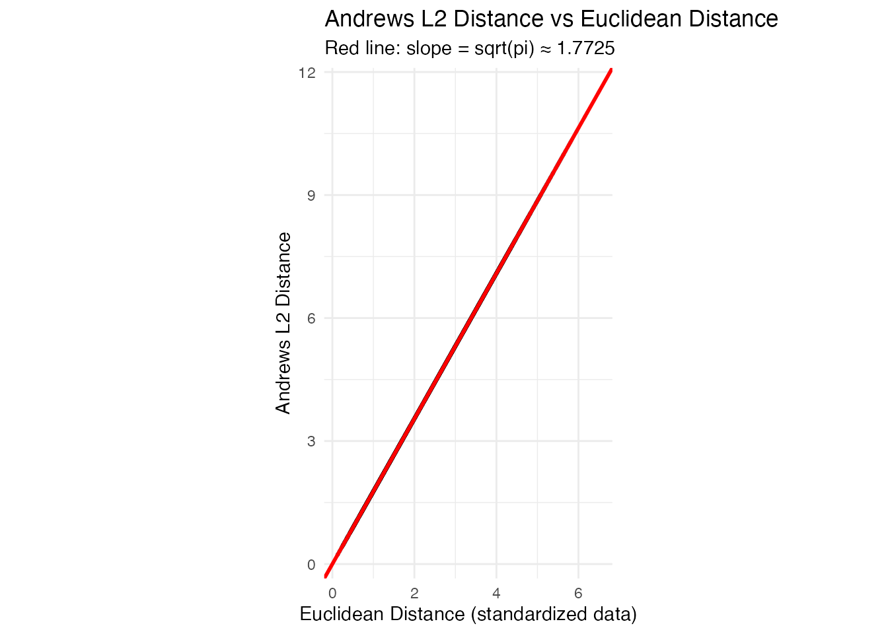
The points fall exactly on the line, confirming the distance preservation theorem.
When Does FDA Add Value?
The Andrews transformation is isometric:
distances between curves equal
times Euclidean distances between the original vectors. This means that
for methods whose only input is a distance matrix — PCA, k-means, basic
outlier detection by Mahalanobis distance — classical
multivariate statistics and FDA on Andrews curves give the same
numerical answers. FPCA on Andrews curves and
prcomp() on the raw matrix produce scores that correlate at
.
K-means produces identical clusters.
So why bother? The value comes not from the transformation itself, but from what you can do afterward in function space:
Functional tools with no tabular equivalent. Functional depth (Fraiman–Muniz, modified band depth), the functional boxplot, the outliergram, and tolerance bands are inherently functional concepts. They classify outliers by type (magnitude vs shape), provide simultaneous monitoring of all variables in a single chart, and define nonparametric tolerance regions. There is no direct multivariate equivalent of
outliergram()ortolerance.band().Smoothing as structured regularization. When is large or variables are noisy, you can smooth the Andrews curves (e.g., via basis expansion or penalized splines) before analysis. This damps high-frequency Fourier terms — corresponding to less important variables — while preserving low-frequency structure. Standard PCA has no natural way to impose this frequency-aware regularization.
Unified pipeline. With Andrews curves, depth, outlier detection, clustering, FPCA, and the functional boxplot all operate on the same
fdataobject with the same distance semantics. In a classical workflow, each of these is a separate analysis step with its own data format and assumptions.Communication. Eigenfunctions, mean curves, and cluster centroids are visual objects. A continuous curve showing the dominant mode of variation communicates structure more intuitively than a table of 13 signed loadings, especially in reports and presentations.
Rule of thumb: If your analysis stops at PCA + k-means on a clean, moderate- matrix,
prcomp()andkmeans()are simpler and give you the same answer. Use Andrews curves when you want the full functional toolbox — depth-based outlier detection, tolerance bands, simultaneous monitoring — or when you’re building a pipeline where multiple FDA methods feed into each other.
Best Practices
Standardize before transforming. Variables on different scales will dominate the Andrews function. Always center and scale (or use robust standardization) before applying the transformation.
Order variables by importance for visualization. Place the most informative variables first so they correspond to low-frequency Fourier terms that are visually dominant. Use ANOVA F-statistics, variance, or domain knowledge to rank.
Use grid points. Fewer points can introduce numerical artifacts in distance computations. The default of 200 is sufficient for most applications.
Works best for small-to-moderate . With many variables, higher-order Fourier terms oscillate rapidly and contribute little visual information. For high-dimensional data, consider dimension reduction (e.g., PCA) before applying the Andrews transformation.
Analytical results are ordering-invariant. While variable ordering affects the appearance of plots, all distance-based methods (clustering, depth, outlier detection) give identical results regardless of ordering.
Summary
| FDA Method | What It Reveals on Andrews Curves |
|---|---|
depth.FM() / depth.MBD()
|
Centrality of multivariate observations |
median() / trimmed()
|
Robust center of the multivariate distribution |
outliers.depth.pond() |
Observations far from the multivariate center |
outliergram() |
Shape outliers in the multivariate space |
magnitudeshape() |
Magnitude vs shape decomposition of outlyingness |
cluster.kmeans() |
Euclidean-distance-based partitioning |
cluster.fcm() |
Soft cluster memberships (overlap detection) |
fdata2pc() |
Dominant directions of multivariate variation |
metric.lp() |
Euclidean distance |